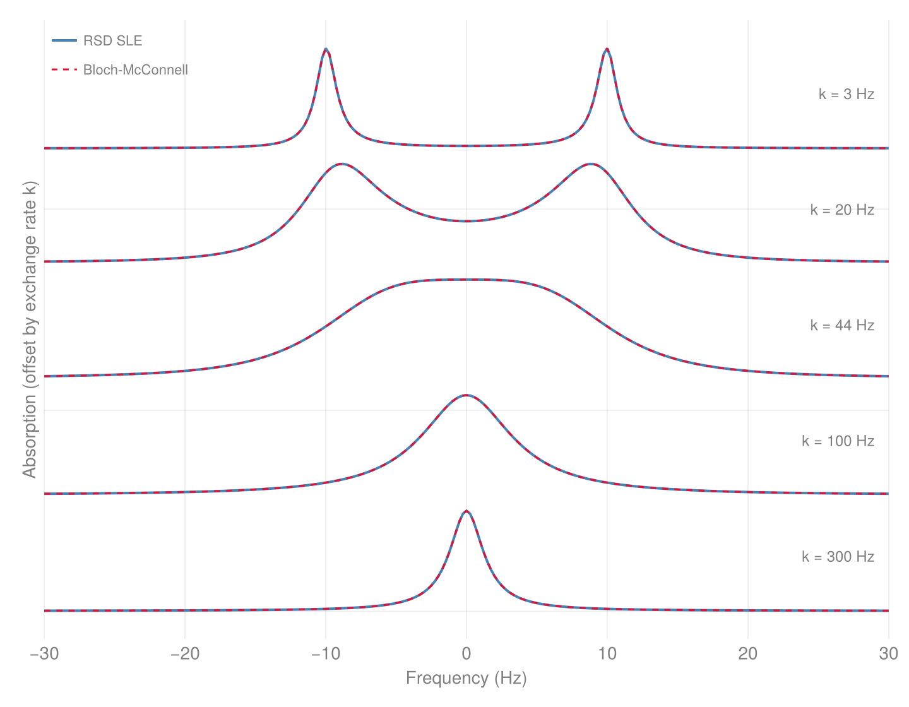

Chemical Exchange & Stochastic Liouville
Two routes to a generator driven by a classical, non-spin degree of freedom: explicit kinetic compartments, and a stochastically modulated Liouvillian. Both live in the restricted (grade-truncated) basis.
Kinetic Exchange (Compartments)
A general kinetic-exchange framework: a set of compartments (each a RestrictedBasis plus its internal Liouvillian) connected by exchange edges (from -> to, at a rate, via a coefficient-space map). The stacked generator on [c_1; ...; c_M] is
L = blockdiag(L_1, ..., L_M) + Σ_edges rate · ( map at block (to, from) − I at block (from, from) )so population leaves from at rate (the −rate·I loss) and arrives at to transformed by the edge map (the +rate·map gain). Edges are written with named constructors (the exchange twin of named Hamiltonian terms) each wrapping the coefficient-space map that encodes the physics:
hop(same basis): population transfer, spins unchanged. Kubo-Anderson / McConnell conformational exchange, EXSY, lineshape coalescence.dissociate: partial-trace a site block out (dissociation).associate/relabel: tensor a fresh block back (association) / permute sites.
For a transform beyond the named edges, write a custom (from_basis, to_basis) -> matrix map and wrap it in an Exchange edge directly.
Assemble a network from compartments with exchange (explicit edges) and propagate it in one call. It returns an ExchangeNetwork that propagate steps, returning per-compartment named traces; it assembles the stacked generator and advances it for you. A dissolution / re-association pair on a site block is the parahydrogen-exchange (SABRE/PHIP) pattern (bound complex <-> free pool, Barskiy Eq. 72); the field-specific convenience wrappers for it are earmarked for a later tailored submodule, so build it from the named edges directly:
C = compartment(restricted_basis(4, 3), hamiltonian(4; freqs, couplings)) # bound complex: 2 hydrides + 2 substrate
S = compartment(restricted_basis(2, 3), hamiltonian(2; freqs, couplings)) # free substrate pool
net = exchange(C, S; edges = [dissociate(1 => 2, 1:2; rate = 3.0, weight = 0.1), # hydride pair leaves
associate(2 => 1, 1:2; source = singlet(1, 2), # fresh parahydrogen singlet
rate = 0.3, weight = 10.0)]) # re-associates
res = propagate(net, ((singlet(1, 2), mixed(:rest)), mixed(:all)), 0.0:0.5:40.0;
observables = (C = ["Iz" => spin_op(4, 4, 3)], S = ["Iz" => spin_op(2, 2, 3)]))
res.traces.S["Iz"] # substrate polarization build-up, per compartmentGeneral networks compose named edges directly (here a McConnell two-site population exchange):
A = compartment(restricted_basis(2, 2), hamiltonian(zeeman(2, [ 5.0, -5.0]), jcoupling(2, 1, 2, 3.0)))
B = compartment(restricted_basis(2, 2), hamiltonian(zeeman(2, [-5.0, 5.0]), jcoupling(2, 1, 2, 3.0)))
net = exchange(A, B; edges = [hop(1 => 2; rate = 2.0), hop(2 => 1; rate = 3.0)])RestrictedSpinDynamics.Compartment — Type
CompartmentOne exchange compartment: a RestrictedBasis and its internal generator L. Built with compartment; the unit the exchange / sabre composers connect.
RestrictedSpinDynamics.Exchange — Type
Exchange(from, to, rate; via)A kinetic-exchange edge: population leaves compartment from and arrives at to at rate, transformed by the coefficient-space map via (any (from_basis, to_basis) -> matrix). Usually built through the named edge constructors hop / dissociate / associate / relabel rather than directly; construct an Exchange with a custom via for a transform they do not cover.
Examples
julia> e = hop(1 => 2; rate = 0.5); # a named edge is an Exchange
julia> (e.from, e.to, e.rate)
(1, 2, 0.5)RestrictedSpinDynamics.ExchangeNetwork — Type
ExchangeNetworkCompartments joined by kinetic Exchange edges, assembled into one stacked generator over [c_1; …; c_M]. Build with exchange, or sabre for a SABRE network; propagate with propagate.
RestrictedSpinDynamics.associate — Method
associate(from => to, block; source, rate, weight = 1.0) -> ExchangeAssociation edge: tensor the fresh source onto the block sites of to, at rate. source is a state term or coefficients over restricted_basis(length(block), length(block)).
RestrictedSpinDynamics.compartment — Method
compartment(basis, H; jumps = ...) -> Compartment
compartment(basis, L) -> CompartmentBuild an exchange Compartment from a Hamiltonian H::PauliDict (+ optional jumps) or from a prebuilt superoperator L.
RestrictedSpinDynamics.dissociate — Method
dissociate(from => to, block; rate, weight = 1.0) -> ExchangeDissociation edge: partial-trace the block sites out of from, leaving to, at rate.
RestrictedSpinDynamics.exchange — Method
exchange(compartments...; edges) -> ExchangeNetworkConnect compartments by an explicit edges::Vector{Exchange} list; each edge moves population from -> to at its rate, transformed by its via map (write edges with the named constructors hop / dissociate / associate / relabel). sabre builds the Barskiy dissociation/association network directly.
Examples
julia> C = compartment(restricted_basis(1, 1), PauliDict(); jumps = decay(1, 1:1, 1.0));
julia> S = compartment(restricted_basis(1, 1), PauliDict());
julia> net = exchange(C, S; edges = [hop(1 => 2; rate = 0.5)]);
julia> net.sizes
2-element Vector{Int64}:
4
4RestrictedSpinDynamics.hop — Method
hop(from => to; rate, weight = 1.0) -> ExchangePopulation transfer from -> to with spins unchanged (McConnell / EXSY same-basis exchange) at rate.
RestrictedSpinDynamics.propagate — Method
propagate(net::ExchangeNetwork, c0s, ts; observables, method = :krylov, dt = nothing) -> (; ts, traces, final)Propagate the exchange network on its stacked coefficient vector and return per-compartment results. c0s is one initial state per compartment (a tuple/NamedTuple aligned to the compartments; each entry a state term, a tuple of terms, or a coefficient vector). observables is a NamedTuple (or tuple) with one name => op list per compartment; traces mirrors its keys, each a Dict(name => Vector), and final holds the per-compartment final coefficient vectors. Uses the same matrix-free Krylov stepper as propagate (method = :dense for the matrix-exp reference), so a restricted basis per compartment reaches networks the dense d^N reference cannot.
Examples
julia> C = compartment(restricted_basis(3, 2), hamiltonian(jcoupling(3, 1, 2, 5.0)));
julia> S = compartment(restricted_basis(1, 1), PauliDict());
julia> net = exchange(C, S; edges = [dissociate(1 => 2, 1:2; rate = 1.0, weight = 0.3), associate(2 => 1, 1:2; source = singlet(1, 2), rate = 0.3, weight = 1/0.3)]);
julia> res = propagate(net, ((singlet(1, 2), mixed(:rest)), polarized(1, :z)), 0.0:0.5:1.0;
observables = (C = ["Iz3" => spin_op(3, 3, 3)], S = ["Iz" => spin_op(1, 1, 3)]));
julia> length(res.ts), length(res.traces.C["Iz3"])
(3, 3)RestrictedSpinDynamics.relabel — Method
relabel(from => to, perm; rate, weight = 1.0) -> ExchangeSite-relabeling edge: permute sites by perm (same basis) at rate, e.g. a symmetric site swap.
Stochastic Liouville
The complementary route replaces discrete compartments with a classical M-state bath that modulates the generator in place: one density per bath state on a shared basis, with physical density the block sum ρ = Σ_n ρ_n. The sle composer bundles the per-state conditioned Liouvillians, the classical rate matrix, and the stationary populations into an SLE that propagate steps directly; two_state_exchange is the two-site preset. Exact and non-perturbative (any field, through level crossings), the reference the secular relaxation backends reduce to. Unlike the kinetic exchange route above, population is not transferred between compartments; every bath state shares one basis.
The two-site preset is the textbook chemical-exchange coalescence: one spin hopping between two sites at $\pm\delta$ with equal populations and rate $k$. As $k$ grows the two lines broaden, coalesce near $k \approx \pi\Delta/\sqrt{2}$, and sharpen into one. The stochastic-Liouville engine reproduces the classical Bloch-McConnell lineshape across the whole series to machine precision.

RestrictedSpinDynamics.SLE — Type
SLEA composed stochastic Liouville model: per-bath-state conditioned Liouvillians Ls, the classical rate matrix W, and the stationary bath populations p. Build with sle (or the two_state_exchange preset) and step with propagate.
RestrictedSpinDynamics.propagate — Method
propagate(basis, model::SLE, c0, ts; observables, krylov_m=30) -> (; ts, traces, drift)Propagate the stochastic Liouville model SLE from physical initial state c0 (spread over the bath as p[n]·c0), reading observables on the block sum ρ = Σ_n ρ_n. Same interface as propagate; drift is the peak trace-conservation error.
RestrictedSpinDynamics.propagate_sle — Method
propagate_sle(basis, Ls, W, c0, ts; p, observables, krylov_m=30) -> (; ts, traces, drift)Explicit (Ls, W) form of the stochastic Liouville propagation (the thin forwarder behind propagate(basis, ::SLE, ...)): propagate from physical initial state c0 distributed over bath states as p[n]*c0, and evaluate observables on the physical density rho = sum_n rho_n. Krylov expv stepping over ts, same interface as propagate; drift is the peak trace-conservation error over the run.
Examples
julia> b = restricted_basis(2, 2);
julia> H1 = hamiltonian(zeeman(2, [10.0, 0.0]), jcoupling(2, 1, 2, 5.0));
julia> H2 = hamiltonian(zeeman(2, [10.0, 0.0]), jcoupling(2, 1, 2, 10.0));
julia> ex = two_state_exchange(b, H1, H2; k12 = 1e3, k21 = 1e3);
julia> r = propagate_sle(b, ex.Ls, ex.W, state(b, singlet(1, 2)), 0.0:0.05:0.1; p = ex.p, observables = ["S" => singlet_op(2, 1, 2)]);
julia> length(r.ts)
3RestrictedSpinDynamics.sle — Method
sle(Ls, W; p = <stationary>) -> SLECompose a stochastic Liouville model (Kubo-Anderson): a Hamiltonian fluctuating in place over a classical M-state bath. Ls[n] is the Liouvillian conditioned on bath state n and W the M×M classical rate matrix (W[n,m] = rate m -> n, columns summing to 0); p is the stationary bath distribution (default: the normalized stationary distribution of W). propagate steps the resulting SLE from a physical c0 spread over the bath as p[n]·c0 and reads observables on the block sum ρ = Σ_n ρ_n. Exact and non-perturbative (any field, through level crossings). Distinct from the kinetic exchange route, which transfers population between separate compartments; here every bath state shares one basis.
Examples
julia> b = restricted_basis(2, 2);
julia> L1 = build_liouvillian(b, hamiltonian(jcoupling(2, 1, 2, 5.0)));
julia> L2 = build_liouvillian(b, hamiltonian(jcoupling(2, 1, 2, 10.0)));
julia> model = sle([L1, L2], [-1.0 1.0; 1.0 -1.0]);
julia> round.(model.p; digits = 6) # equal rates -> equal stationary populations
2-element Vector{Float64}:
0.5
0.5RestrictedSpinDynamics.two_state_exchange — Method
two_state_exchange(basis, H1, H2; k12, k21, jumps1=[], jumps2=[]) -> SLETwo-state classical-bath exchange preset (e.g. QMEC tunneling between couplings J1, J2): the sle model for H1, H2 (with optional per-state jumps), the 2x2 rate matrix (k12 = rate 1->2, k21 = rate 2->1), and the stationary populations p = [k21, k12] / (k12 + k21). Step the returned SLE with propagate.
Examples
julia> b = restricted_basis(2, 2);
julia> ex = two_state_exchange(b, hamiltonian(jcoupling(2, 1, 2, 5.0)), hamiltonian(jcoupling(2, 1, 2, 10.0)); k12 = 1.0, k21 = 1.0);
julia> ex.p # equal rates -> equal stationary populations
2-element Vector{Float64}:
0.5
0.5